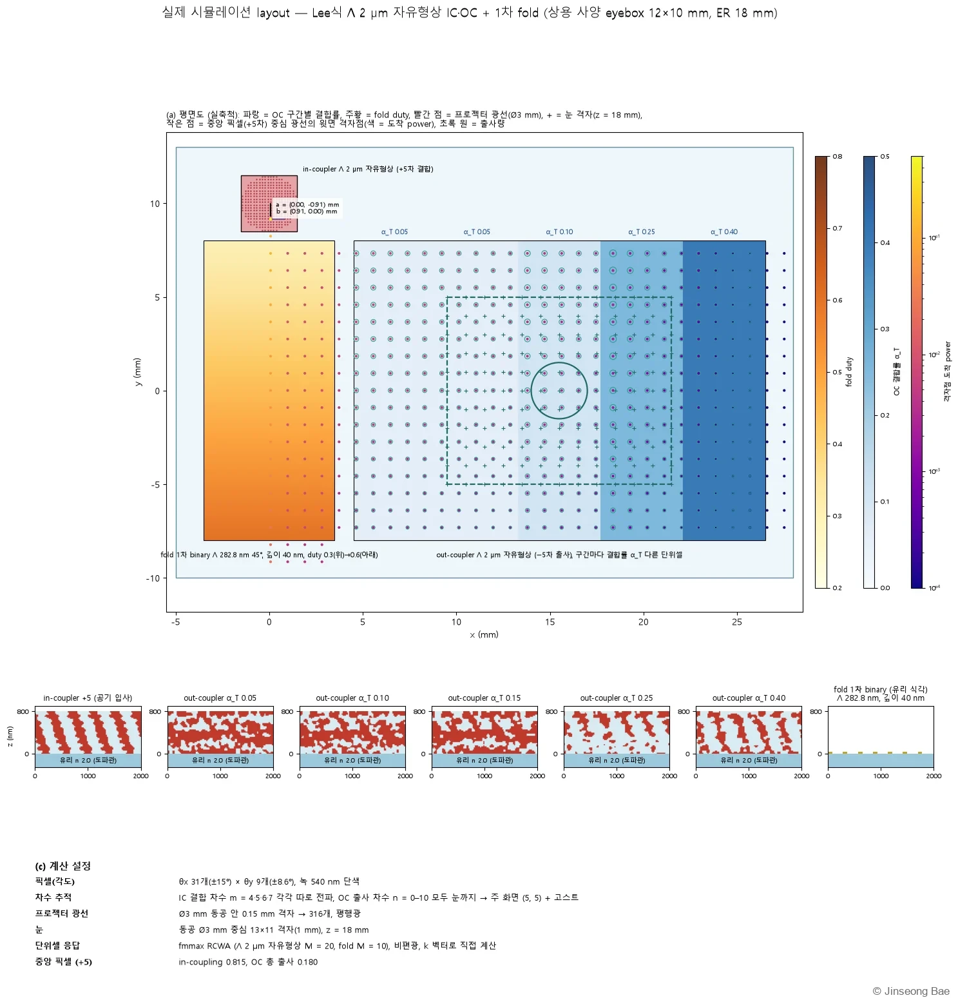
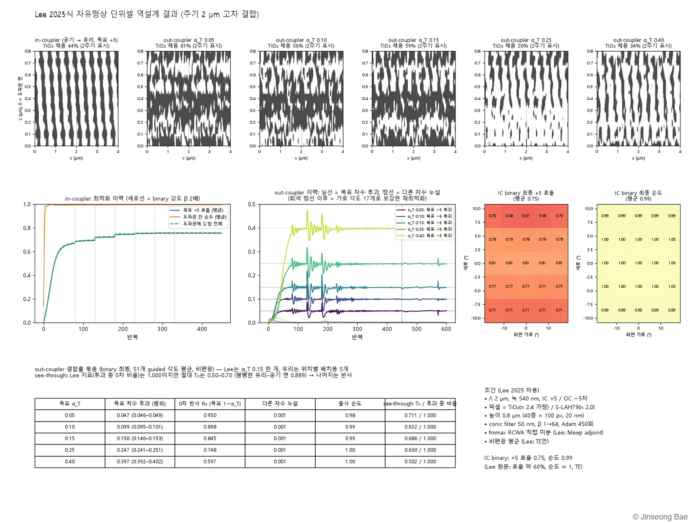
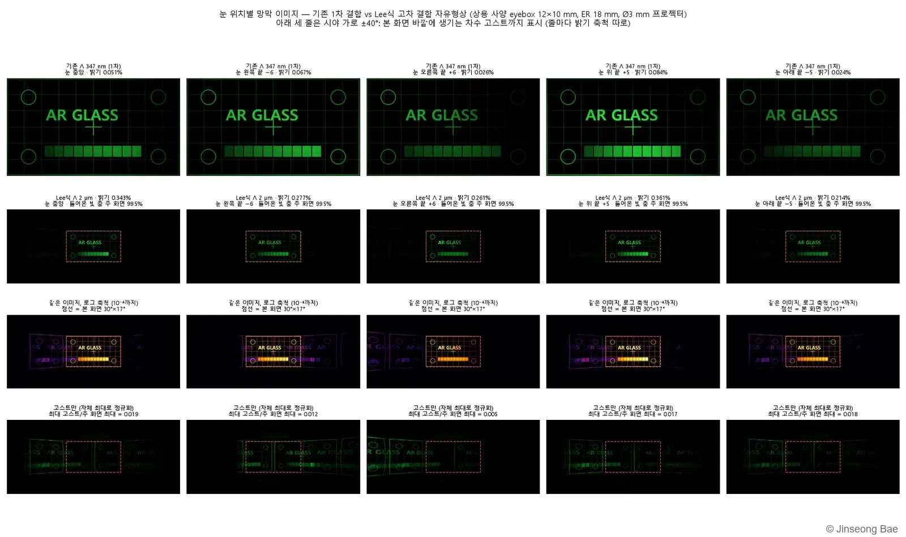

문제와 동기
회절 도파관 AR 글래스는 마이크로 디스플레이의 빛을 in-coupler 격자로 유리판 안에 넣고, 전반사로 옮긴 뒤 out-coupler로 눈 앞에서 꺼냅니다. 단위셀 효율이 높아도 시야 각도별로 고르지 않거나, 원치 않는 차수가 고스트로 새면 눈에 보이는 이미지는 나빠집니다.
출발점은 같은 연구실에서 공개된 논문 S. Lee, B. Lee, H. Chung, Nanophotonics 14(27), 5555 (2025)입니다. 이 논문은 주기 2 µm에서 고차(+5차)로 결합하는 자유형상 커플러의 단위셀 최적화를 보였고, eyebox와 망막 이미지 같은 시스템 수준은 향후 과제로 남겼습니다. 여기서는 원문 조건을 재현한 뒤, 그 시스템 수준까지 직접 이었습니다.
시뮬레이션 설정
단위셀 (RCWA)
| 솔버 | fmmax (JAX), FFT 정식화, 1D 확장 M = 20 (차수 41개), float64 |
|---|---|
| 구조 | 주기 2.0 µm, 높이 0.8 µm, x–z 40층 × 100픽셀 (20 nm) 자유형상 |
| 재료 | TiO₂ n 2.4 (가정값) / 유리 도파관 n 2.0, 두께 0.5 mm |
| 파장·편광 | 540 nm 단색, 두 편광 평균(비편광) |
| 시야 | 화면 30° × 17°. in-coupler 5 × 5 = 25각, out-coupler 17 × 3 = 51각 |
| 목적함수 | IC: +5차 투과를 1로, 도파 차수 중 +5차 비율을 1로. OC: 출사 T₅를 목표 α_T로, 0차 반사 R₀를 1 − α_T로, 투시(see-through) 0차 비율을 1로 |
시스템 (beam tracing)
| 배치 | IC → fold (7 × 16 mm) → OC (22 × 16 mm, 5구간), eyebox 12 × 10 mm, eye relief 18 mm, 동공 Ø 3 mm |
|---|---|
| 모델 | 격자점 동적 계획법으로 도파 경로를 추적. IC 차수 4–7과 모든 출사 차수를 세어 고스트 포함. 비간섭·비편광 |
| 망막 이미지 | 원본 이미지 × 각도별 전달 효율 (PSF·수차는 넣지 않음) |


방법
- 원문 조건 재현주기·차수·목적함수·필터를 원문에 맞추고, 원문 Table 1의 k-space 조건을 다시 계산해 33개 모두 일치를 확인했습니다.
- in-coupler 역설계Adam(학습률 0.03), conic filter 최소 크기 50 nm, tanh 투영 β 1 → 64 연속. 450회, 약 2.4시간(CPU).
- out-coupler 5종추출률 α_T = 0.05/0.10/0.15/0.25/0.40 각각 450회. 이후 각도를 51개로 늘려 150회 재최적화했습니다.
- 배치 탐색각도별 효율표(LUT)를 만들고, OC 5구간 배치와 fold 깊이·duty를 번갈아 두 번 탐색했습니다.
- 시스템 시뮬레이션눈 위치별 화면 밝기, eyebox 균일도, 고스트, 망막 이미지를 계산했습니다.
단위셀 결과


| in-coupler | +5차 T 평균 0.753 (최소 0.674, 최대 0.815), 도파 차수 중 +5차 비율 0.994. 원문 TE 약 60 % |
|---|---|
| out-coupler | 목표 0.05/0.10/0.15/0.25/0.40 → 0.047/0.099/0.150/0.247/0.397, 다른 차수 누설 약 0.1 % |
| 투시 0차 | 원문 지표(0차 비율)로 1.000, 절대 투과 T₀는 0.50–0.71 |

세로줄 문제 — 각도 사이에 숨은 Rayleigh anomaly
처음 out-coupler는 가로 5개 각도에서만 최적화했습니다. 단위셀 지표는 좋았지만 망막 이미지에 세로줄이 나타났습니다. 주기 2 µm는 차수 간격이 0.27로 촘촘해서, 최적화하지 않은 각도 사이(±4.6°, ±6.3°, ±9.2°, ±11°)에서 새 차수가 열리고 닫히는 Rayleigh anomaly가 생깁니다. 그 각도에서 0차 반사 R₀가 0.95에서 0.81로 떨어져 화면 한 열이 어두워진 것입니다.

anomaly 근처를 포함하도록 가로 17개 × 세로 3개 = 51개 각도로 다시 최적화하자 화면 CV가 0.49에서 0.35로, eyebox min/max가 0.48에서 0.50으로 나아졌습니다. 완전히 없앤 것은 아니고, 모서리 두 점(가로 +11°, 세로 ±8.6°)은 R₀ 0.76, ±5° 열은 약 30 % 어둡게 남았습니다.



시스템 결과

| 지표 (중앙 눈) | 기존 Λ 347 nm 1차 → 5각 OC → 51각 OC |
|---|---|
| 화면 평균 밝기 | 0.049 % → 0.325 % → 0.383 % |
| 화면 CV | 0.62 → 0.49 → 0.35 |
| eyebox min/max | 0.13 → 0.48 → 0.50 |
| 고스트 / 주 화면 | — → 0.018 → 0.006 |
기존 1차 설계 수치는 3파장 평균이고 이번 설계는 540 nm 단색이라 직접 비교에는 주의가 필요합니다. α_T 0.15를 모든 구간에 같게 쓰면 밝기 0.225 %, CV 0.74, min/max 0.09로, 구간별 추출률 배치가 균일도의 대부분을 만듭니다.
검증
- Fourier 차수 수렴: M 20 대비 M 30·40의 최대 차이 IC 0.0014, OC 0.003.
- RCWA vs Meep 2D: 면내 입사, TE·TM, Bloch 주기, 해상도 100 px/µm. IC 수직 입사 TE 0.892 vs 0.901(해상도 200에서 0.897), TM 0.727 vs 0.729. 가장 큰 차이는 OC α_T 0.40의 끝 각도 TE에서 약 0.03. 에너지 합 0.987–1.008.
Meep 교차 확인은 대표 케이스 몇 개에 대한 점검이며, 해상도 200은 한 케이스만 돌렸습니다.
한계와 주장하지 않는 것
주장하는 것
- Λ 2 µm 고차 결합 커플러를 RCWA 미분으로 재설계하고 시스템 이미지까지 연결했다
- 각도 샘플링이 성기면 anomaly가 이미지에 세로줄을 만든다는 원인을 찾고 크게 줄였다
주장하지 않는 것
- RGB 컬러 — 녹색 단색만 계산했다
- PSF·MTF, 간섭, 도파관 안 2차 고스트 — 모델에 없다
- TiO₂ n 2.4와 높이 0.8 µm는 가정값이며, 공차·제작·실측은 하지 않았다
코드 구성
rcwa/lee_cell.py,rcwa/lee_opt.py— 단위셀 모델과 역설계 (--part ic|oc,--dense)rcwa/lut_lee.py— 각도별 효율표rcwa/system_sim_lee.py— fold·OC 배치 탐색과 전체 시스템 시뮬레이션meep_t1/lee_xcheck.py— Meep 2D 교차 확인figs/make_lee_*.py— 그림
모든 계산은 개인 PC의 WSL CPU에서 했습니다. 2026년 10월 27일 작업입니다.